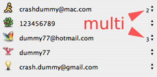
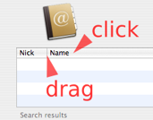
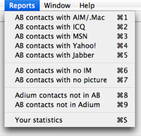
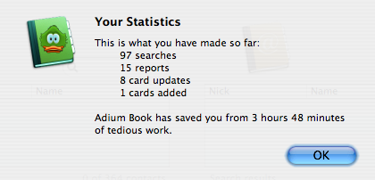

News for this version
- Reworked interface

- Performance tweaks - Now it's even faster!
- Support for multiple accounts in Address Book view - Finally!
- New menu item Report > Yous statistics
- New menu item Adium Book > Sponsor new features
- The Set IM button now creates a new field instead overwriting existent data
- Fixed Jabber accounts issues with Reports
- Universal binary
Enjoyed the new features? Want to see more on the next release?
So please support the Adium Book project, clicking on the
Sponsor new features menu item.
Tips & Tricks
- In Address Book view, to copy the selected IM login to the clipboard,
right click it.
Yes, right click the Pop-up button.
- The text search is case insensitive,
so don't mind about capitalization.

- The search results are sorted by name.
You can click on the table headings to change the sort column.
A second click makes a reverse sort.
- You can drag the table headings inner border
to resize the columns width. See picture.
- Adium must be Online.
If don't, the search results will be very poor and incomplete.
- When you launch this application,
both Adium and Address Book are also launched
(if they aren't already running).
Adium Book needs them.
- To fully integrate the applications, set up Adium to get the
contact's information from Address Book (picture and name).
Open Preferences > Advanced > Address Book and check the following:
- Import my contacts' names from the Address Book
- Use Address Book images as contacts' icons
- Consolidate contacts listed in the card
Buttons
- Try to find in Address Book the selected Adium contact.
-
The contact IM login and service are searched on the Address Book
cards. As it isn't a name or nick search, the IM field on the
contact's card must be filled. The results (usually just one
contact) will appear on the Address Book side (right).
- Try to find in Adium the selected Address Book contact.
-
All the IM logins filled on the contact's card are searched,
so there can be multiple results on the Adium side (left).
Usually all the contacts found are from the same person, but
note that each can have a different picture.
- Show the contact's card in Address Book.
-
This button brings the Address Book application to the front, showing the
card of the selected contact. Then you can make quick updates on it.
Useful after adding an Adium contact to Address Book (See next button).
Note: In Address Book, the "All" group must be selected and
its search field must be empty.
- Add the Adium contact to Address Book.
-
This button creates a new card in Address Book, using the
information of the selected Adium contact: name, IM login and
picture. Before adding a new card, you can search for the
contact in Address Book using the "Find in Address Book" button.
- Copy the contact's IM login from Adium to Address Book.
-
This button sets the IM field of the selected Address Book contact
using the IM login (number, e-mail or username) of the
selected Adium contact. Useful to consolidate the contacts, so
Adium can use their card's information. You can find people
with missing IM information in Address Book using the "AB contacts
with no IM" report (see Reports).
Note: This button really sets the Address Book card IM field. It
doesn't overwrite the previous contents (if any), but creates a new
field.
(In Adium Book version 1.2 and older, it was an overwrite operation.)
- Copy the contact's picture from Adium to Address Book.
-
This button sets the picture of the selected Address Book contact
using the picture of the selected Adium contact. In simple
words, copy the picture on the left to the right. You can find
people with missing picture in Address Book using the "AB contacts
with no picture" report (see Reports).
Note: This button really sets the contact's picture in
Address Book. It overwrites the previous picture (if any) and this
operation cannot be undone.
Reports

- AB contacts with AIM/.Mac
- AB contacts with ICQ
- AB contacts with MSN
- AB contacts with Yahoo!
- AB contacts with Jabber
Lists all Address Book contacts who have the specific IM field
filled. A quick way to find the preferred IM service of your
friends.
- AB contacts with no IM
Lists all Address Book contacts who have no IM field filled. They
are smart people who have a real life and don't spend time chatting
on the computer. Or maybe you just forgot to fill their info ;)
- AB contacts with no picture
Lists all Address Book contacts who have no picture set. They are
just letters and numbers on your computer. What about to give them a
face? Use the "Find in Adium" button to try to find them in Adium,
so you can use their IM picture (icon, avatar, ...) on the Address Book
card.
- Adium contacts not in AB
Find your Adium-only contacts. With this report you can find people
who you use to chat but don't have a card on your Address Book.
Maybe you are forgetting somebody special? Or maybe you already have
added some of them but just forgot to fill the IM field on Address Book.
- AB contacts not in Adium
Find your Address Book-only contacts. With this report you can find people
who have one or more IM informed on the Address Book card, but you
haven't them in your Adium contact list. You know the girl, maybe
she's online, but you can't talk to her because she's not on your
list. Adium Book helps you to get social!
- Your statistics (Command-S)
A nice report with your usage statistics. It shows how many
searches, reports and actions you have made so far. Based on that
numbers, it shows the estimated total time Adium Book saved you from
doing manual and boring tasks on both Adium and Address Book.

Contact
Contact the author in verde@aurelio.net.
Visit the program's website and leave a comment:
Enjoy!